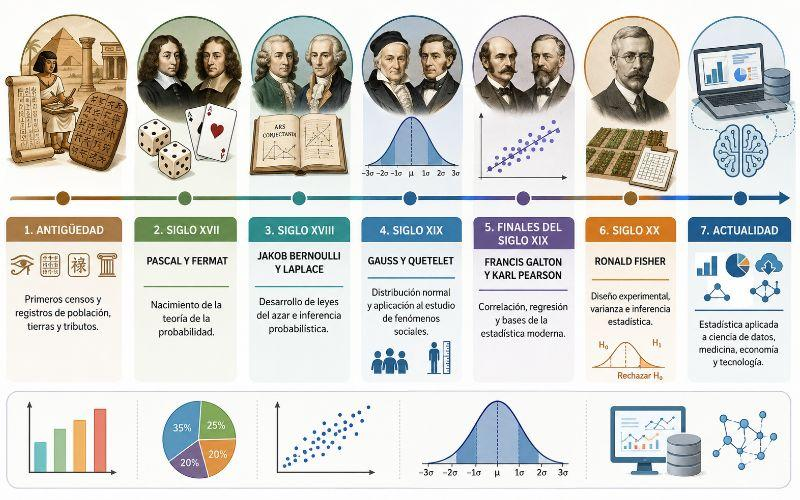
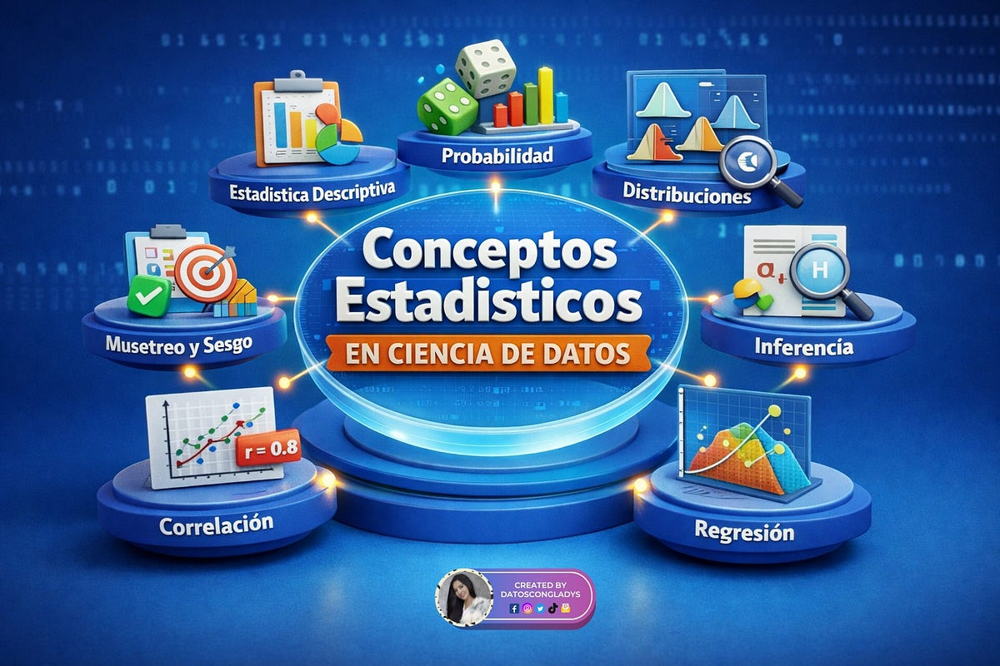
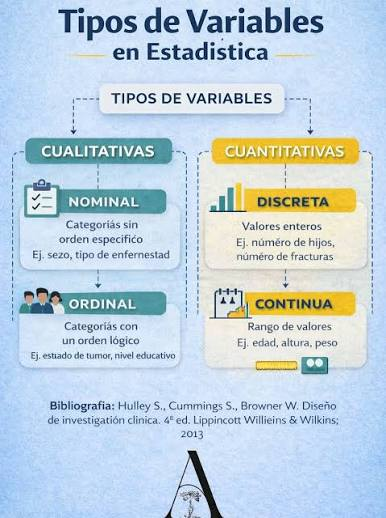
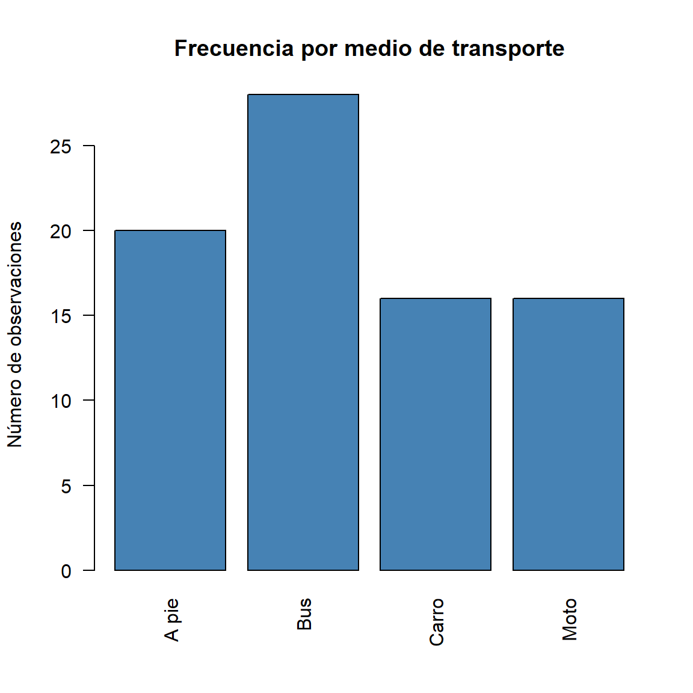
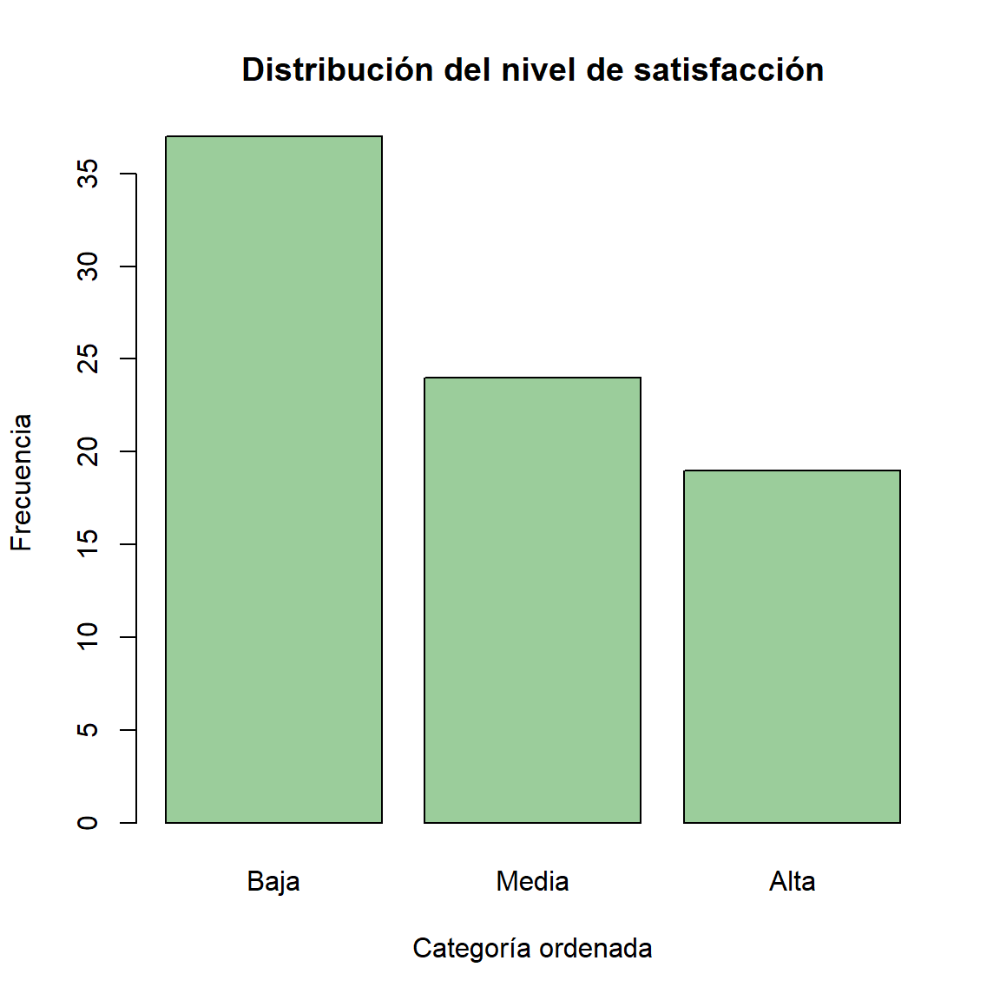
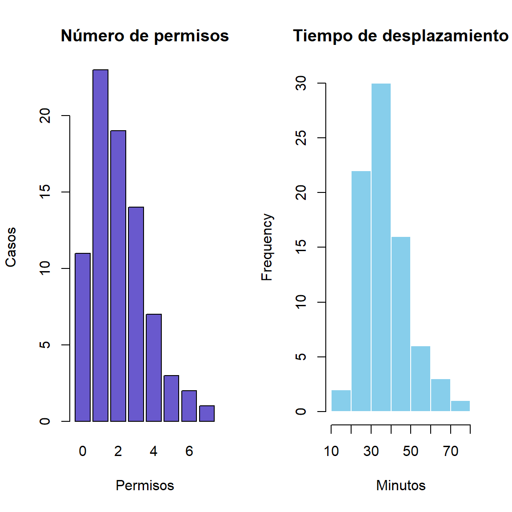

Esta guía integra, en forma didáctica, los documentos Historia de la Estadística, Introducción - tipos de datos y Variables, niveles de medición, recopilados o elaborados por el profesor Dagoberto Salgado Horta. Se añaden explicaciones metodológicas y ejemplos originales reproducibles en R, identificados como ampliaciones pedagógicas. Su propósito es comprender cómo se transforman datos en información útil y cómo elegir el tratamiento estadístico de acuerdo con la naturaleza y escala de cada variable.
Resultados de aprendizaje. Al finalizar, el lector podrá explicar las principales etapas históricas de la estadística, distinguir estadística descriptiva e inferencial, identificar población y muestra, clasificar variables cualitativas y cuantitativas, reconocer las cuatro escalas de medición y ejecutar análisis iniciales con R.
2 .Historia de la estadística

De los registros al análisis
La estadística no nació como una disciplina formal: sus antecedentes están en prácticas antiguas de conteo y registro destinadas a administrar poblaciones, bienes, cultivos y recursos. El material histórico presenta las siguientes referencias y etapas:
Período o civilización
Aportes destacados en el material de clase
Prehistoria
Marcas, símbolos y representaciones para contar personas, animales y bienes.
Babilonia (aprox. 3000 a. C.)
Tablillas de arcilla con registros de producción y comercio.
Egipto antiguo
Registros poblacionales y económicos, así como censos.
China antigua
Recuentos agrícolas, comerciales y poblacionales.
Grecia y Roma
Censos para administración, tributación, organización social y fines militares.
Edad Media
Continuación irregular de registros de tierras y recursos.
Cultura inca
Sistemas de registro administrativo, incluidos los quipus.
Siglos XVI–XVII
Consolidación de registros demográficos y estudio de la mortalidad.
Siglos XVII–XVIII
Desarrollo del cálculo de probabilidades.
Siglos XIX–XX
Teoría de errores, mínimos cuadrados, ampliación a ciencias sociales y métodos modernos.
Época contemporánea
Informática, visualización, grandes bases de datos e inferencia computacional.
Nota
El documento Historia de la Estadística ofrece una secuencia divulgativa de antecedentes históricos. Algunas fechas y afirmaciones puntuales son aproximadas o están presentadas sin respaldo primario; conviene verificarlas con historiografía especializada antes de usarlas como hechos históricos exactos.
Hitos del análisis estadístico
En el siglo XVII, John Graunt utilizó registros de mortalidad para estudiar patrones demográficos. Los materiales también mencionan a Gaspar Neumann y Edmond Halley por sus contribuciones vinculadas con registros y tablas de mortalidad. La probabilidad fue desarrollándose mediante aportes de matemáticos como Bernoulli y Laplace; posteriormente se consolidaron métodos para estudiar errores de medición y ajustar modelos con mínimos cuadrados.
El contenido proporcionado sintetiza la evolución en tres grandes fases: censos, descripción de conjuntos y aritmética política y estadística ligada al cálculo de probabilidades. Con la informática, la estadística amplió su capacidad de análisis, visualización y procesamiento de datos.
Interpretación actual (ampliación): los registros son una fuente de observaciones; la estadística permite analizar su variabilidad, estimar cantidades desconocidas, cuantificar incertidumbre y orientar decisiones.
¿Qué es la estadística?
La estadística es la disciplina que estudia métodos para recopilar, organizar, describir, analizar e interpretar datos, a fin de sustentar conclusiones y decisiones bajo incertidumbre. Esta definición desarrolla la presentada en Introducción - tipos de datos (p. 2).
Obtener conclusiones sobre una población a partir de una muestra, cuantificando la incertidumbre.
Estimar la proporción de estudiantes satisfechos a partir de una muestra aleatoria.
Intervalos de confianza, contrastes, modelos estadísticos.
La predicción es otra aplicación de modelos estadísticos; no debe confundirse con la inferencia acerca de parámetros poblacionales. Una proyección requiere supuestos y validación.
3 .Conceptos

Concepto
Definición
Ejemplo
Población
Conjunto total de unidades sobre las que se desea investigar.
Todos los estudiantes de una universidad durante un semestre.
Muestra
Subconjunto de unidades seleccionado de la población.
120 estudiantes encuestados.
Unidad de análisis
Elemento sobre el que se registra información.
Un estudiante.
Dato
Valor observado o registrado de una variable en una unidad.
Edad = 23 años.
Variable
Característica que puede tomar diferentes valores entre unidades u observaciones.
Edad, programa académico, satisfacción.
Parámetro
Resumen numérico de una población.
Media de edad de toda la universidad, \mu.
Estadístico
Resumen calculado a partir de una muestra.
Media muestral, \bar{x}.
Censo
Observación de todas las unidades de la población definida.
Encuesta a todos los docentes de una facultad.
Muestreo
Procedimiento para seleccionar unidades de una población.
Selección aleatoria simple.
En la práctica se emplean encuestas, entrevistas, cuestionarios, observación y registros administrativos, entre otras fuentes, como señala Introducción - tipos de datos (p. 8). Una muestra no garantiza representatividad por sí sola: esta depende del diseño de selección, la cobertura y las posibles pérdidas o sesgos.
4 .Variables estadísticas

Concepto y naturaleza
Una variable es una característica que puede diferir entre las unidades de estudio o a lo largo del tiempo. Su clasificación depende de qué representa realmente, no simplemente de que esté almacenada como texto o número.
Variables cualitativas o categóricas
Describen categorías o atributos. Se resumen mediante frecuencias, porcentajes y gráficos de barras. Un código numérico puede identificar una categoría sin representar una cantidad: por ejemplo, 1 = urbano y 2 = rural sigue siendo una variable cualitativa nominal.
Nominales: las categorías no poseen un orden intrínseco, como el medio de transporte o el municipio.
Ordinales: las categorías tienen un orden significativo, como satisfacción baja, media, alta; las distancias entre categorías no son necesariamente iguales.
Variables cuantitativas o numéricas
Expresan cantidades que admiten operaciones numéricas con significado.
Discretas: generalmente son resultados de conteos, por ejemplo, número de hijos o número de permisos registrados.
Continuas: se asocian a magnitudes medibles en una escala continua, como estatura, duración, masa o distancia, incluso si el instrumento registra pocos decimales.
Importante
No todo número indica una variable cuantitativa. La cédula, el código postal y los números de camisetas identifican categorías: no tiene sentido calcular su promedio. A la inversa, registrar una estatura con un decimal no la convierte en variable discreta.
Clasificación por naturaleza y ejemplos
Variable
Naturaleza
Subtipo
Justificación
Ciudad de residencia
Cualitativa
Nominal
Nombres sin jerarquía inherente.
Nivel de satisfacción (bajo, medio, alto)
Cualitativa
Ordinal
Categorías ordenables.
Número de estudiantes
Cuantitativa
Discreta
Cuenta unidades completas.
Número de visitas al mes
Cuantitativa
Discreta
Conteo de eventos.
Estatura en metros
Cuantitativa
Continua
Longitud medida.
Tiempo de desplazamiento
Cuantitativa
Continua
Duración medida.
Identificador de registro (1001, 1002)
Cualitativa
Nominal
Números usados como etiquetas.
5 .Escalas o niveles de medición
Las escalas de medición establecen cuáles comparaciones y operaciones resultan interpretables. El material Variables, niveles de medición identifica cuatro niveles: nominal, ordinal, intervalo y razón (pp. 11–17).
Escala
Propiedad esencial
Ejemplo
Operaciones pertinentes
Nominal
Identidad y diferencia entre categorías, sin orden.
Tipo de vehículo.
Conteos, proporciones, moda.
Ordinal
Categorías con orden, pero distancias no necesariamente equivalentes.
Nivel de satisfacción.
Conteos, mediana/cuantiles de orden, comparaciones de rangos.
Intervalo
Intervalos iguales, pero cero convencional.
Temperatura en °C.
Diferencias, media, desviación estándar; no proporciones como “el doble de caliente”.
Razón
Intervalos iguales y cero absoluto significativo.
Duración, distancia, masa.
Diferencias, razones, media y otras operaciones aritméticas.
Interpretaciones y precauciones
Nominal: las categorías pueden ordenarse visualmente por frecuencia, pero ese orden no cambia su escala. Por ejemplo, el municipio más frecuente no es “mayor” que los demás.
Ordinal: conocer que una satisfacción es alta frente a media no permite asegurar que la diferencia sea la misma que entre media y baja. Las escalas tipo Likert de un solo ítem suelen tratarse como ordinales.
Intervalo: en grados Celsius, 20 °C y 10 °C difieren en 10 grados, pero 20 °C no representa el doble de temperatura termodinámica que 10 °C. El cero en °C no expresa ausencia de temperatura.
Razón: una duración de 20 minutos sí es el doble de una de 10 minutos; un valor cero significa ausencia de duración en la magnitud descrita.
Puntos especiales: una fecha del calendario es típicamente de intervalo cuando se analizan diferencias temporales; la duración entre dos fechas es de razón. Las calificaciones y puntuaciones requieren revisar cómo se construyó su escala antes de asignarles nivel.
Matriz integral: naturaleza y escala
Variable
Naturaleza
Escala
Tipo de transporte
Cualitativa nominal
Nominal
Grado de satisfacción
Cualitativa ordinal
Ordinal
Temperatura ambiente (°C)
Cuantitativa continua
Intervalo
Distancia recorrida (km)
Cuantitativa continua
Razón
Número de eventos
Cuantitativa discreta
Razón
Documento de identidad
Cualitativa nominal
Nominal
Año de nacimiento (año calendario)
Cuantitativa discreta en registro
Intervalo
6 .Aplicación introductoria en R
R permite almacenar variables, transformarlas, resumirlas y representarlas. Los siguientes ejemplos son datos ficticios para aprendizaje y utilizan únicamente funciones incluidas con R para facilitar su ejecución.
En R, character almacena texto; factor representa categorías; ordered factor representa categorías con orden; integer y numeric representan números, pero la clase de almacenamiento de R no determina por sí sola la escala estadística.
barplot(frecuencias, col ="steelblue", las =2,main ="Frecuencia por medio de transporte",ylab ="Número de observaciones")

Resumir una variable ordinal
Ver código
table(estudio$satisfaccion)
Baja Media Alta
37 24 19
Ver código
barplot(table(estudio$satisfaccion), col ="darkseagreen3",main ="Distribución del nivel de satisfacción",xlab ="Categoría ordenada", ylab ="Frecuencia")

Resumir variables cuantitativas
Ver código
summary(estudio$numero_permisos)
Min. 1st Qu. Median Mean 3rd Qu. Max.
0.000 1.000 2.000 2.062 3.000 7.000
par(mfrow =c(1, 2))barplot(table(estudio$numero_permisos), col ="slateblue3",main ="Número de permisos", xlab ="Permisos", ylab ="Casos")hist(estudio$tiempo_min, col ="skyblue", border ="white",main ="Tiempo de desplazamiento", xlab ="Minutos")

Ver código
par(mfrow =c(1, 1))
Lectura: el gráfico de barras muestra frecuencias de valores de conteo; el histograma agrupa una variable continua en intervalos. En ambos casos son descripciones de esta muestra ficticia.
Ejemplo básico de inferencia: proporción
Supongamos que el indicador de interés es utilizar bus. Un intervalo de confianza para una proporción resume la precisión de una estimación bajo los supuestos pertinentes del muestreo y del modelo. Como los datos aquí fueron simulados con fines docentes, el resultado no describe ninguna población real.
Ver código
exitos <-sum(estudio$transporte =="Bus")prop.test(x = exitos, n =nrow(estudio), correct =FALSE)
1-sample proportions test without continuity correction
data: exitos out of nrow(estudio), null probability 0.5
X-squared = 7.2, df = 1, p-value = 0.00729
alternative hypothesis: true p is not equal to 0.5
95 percent confidence interval:
0.2545455 0.4591999
sample estimates:
p
0.35
Nota: la elección definitiva de una prueba estadística no depende únicamente del nivel de medición; también importan el diseño de muestreo, independencia de las observaciones, tamaño de muestra, distribución y pregunta científica.
7 .Actividades de aprendizaje
Actividad 1: clasifique las variables
Para cada situación, indique naturaleza, subtipo y escala, y justifique brevemente su respuesta:
Ciudad donde reside una persona.
Número de libros leídos en un mes.
Nivel de riesgo: bajo, medio, alto.
Temperatura registrada en grados Celsius.
Litros consumidos en un trayecto.
Código numérico asignado a un estudiante.
Tiempo para responder un formulario, en segundos.
Año calendario de ingreso a una institución.
Actividad 2: interpretación en R
A partir de estudio, calcule el porcentaje de personas ficticias que utilizan moto, la mediana del tiempo de desplazamiento y el número máximo de permisos. Describa por qué no tendría sentido calcular una media de la variable transporte.
La historia de la estadística refleja una transición desde el conteo administrativo hacia el análisis de variabilidad e incertidumbre. La distinción entre estadística descriptiva e inferencial determina el alcance de las conclusiones. Antes de calcular resúmenes o construir modelos, es indispensable reconocer la unidad de análisis, la naturaleza de cada variable y su escala de medición. R y Quarto permiten integrar código, resultados y argumentación en un informe reproducible.
Fuentes y alcance de esta guía
Material suministrado por el usuario:
Salgado Horta, D. (comp.). Historia de la Estadística. Presentación, 40 páginas. Base para antecedentes, períodos e hitos históricos.
Salgado Horta, D. Estadística: Introducción - tipos de datos. Material de clase, período 2026-1, 14 páginas. Base para definición, ramas, población, muestra e instrumentos.
Salgado Horta, D. Estadística: Variables, niveles de medición. Material de clase, período 2026-1, 20 páginas. Base para clasificación de variables y niveles nominal, ordinal, intervalo y razón.
Ampliación didáctica de esta guía: precisiones sobre representatividad, parámetros y estadísticos, distinción entre códigos y cantidades, fechas y duración, interpretación de escalas y ejemplos originales en R. Se distingue de lo expresado literalmente en las presentaciones. Los datos generados son simulados y no representan observaciones reales.
Cómo generar el documento desde RStudio
Guarde este archivo con extensión .qmd. Abra el archivo en RStudio con Quarto instalado y seleccione Render para generar el HTML; también puede ejecutar en la terminal quarto render Guia_Estadistica_Fundamentos_R_Quarto.qmd --to html. No se requieren paquetes de R adicionales para los ejemplos incluidos.